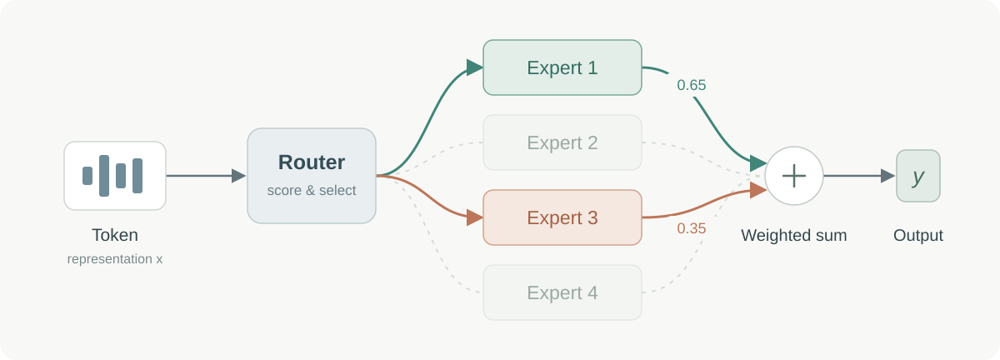

最近在做一些 MoE 的探索，想着总结一下 MoE 的发展历程，也帮助自己捋清楚相关工作的脉络，以期能有一些新的想法。
编年史观
提到 MoE，大家可能最先想到的是 Sparsely-Gated MoE（2017）1、GShard（2020）2 和 Switch Transformer（2021）3 这三个工作，毕竟后续不少工作都会引用它们。不过，MoE 的想法还可以追溯到 1991 年：
Adaptive Mixtures of Local Experts
Robert A. Jacobs、Michael I. Jordan、Steven J. Nowlan、Geoffrey E. Hinton
发现 Hinton 老师！不过，早期的混合专家并不是如今这种只取 Top-K 个 Expert 的稀疏路由，和 Sparsely-Gated MoE 还是有区别。
Sparsely-Gated MoE 建立了后来广泛使用的稀疏专家选取与融合机制；Switch Transformer 则将路由简化为 Top-1，并采用辅助损失来促进负载均衡。
这里先梳理 ChatGPT 发布之前的一段发展历程，尽量覆盖不同方向，但仍可能有遗漏。作为背景，GPT-3 发布于 2020 年 5 月，GShard 发布于同年 6 月；到 2021 年，MoE 的研究已经从模型规模延伸到路由方式、训练稳定性和执行效率。
| 时间 | 代表工作 | 主要进展 |
|---|---|---|
| 2021.01 | Switch Transformer3 | 简化为 Top-1 路由，将稀疏模型扩展至万亿参数。 |
| 2021.03 | BASE Layers4 | 通过平衡分配实现 Token 到 Expert 的均衡路由，无需辅助均衡损失。 |
| 2021.06 | Hash Layers5 | 采用固定哈希路由，在论文实验中可与可学习路由竞争。 |
| 2021.12 | GLaM6 | 将稀疏语言模型扩展至 1.2 万亿参数，训练与推理成本低于 GPT-3。 |
| 2022.01 | DeepSpeed-MoE7 | 优化 MoE 训练与推理系统，降低部署成本。 |
| 2022.02 | Unified Scaling Laws for Routed Language Models8 | 刻画专家数量、模型规模与计算量对性能的影响。 |
| 2022.02 | ST-MoE9 | 引入 Router z-loss 和 MoE 微调策略，改善稳定性与迁移能力。 |
| 2022.02 | Expert Choice Routing10 | 让专家选择 Token，均衡专家负载，并允许每个 Token 使用不同数量的专家。 |
| 2022.11 | MegaBlocks11 | 通过块稀疏计算加速 MoE 训练，无需丢弃 Token。 |
这个时间线还挺有意思的：GLaM 已经在探索大规模自回归语言模型中的稀疏计算，后续工作又迅速补上路由、稳定性和 GPU 系统优化。沿着这些方向看，比单纯按模型的总参数量排序，更容易理解现代 MoE 是怎么一步步形成的。
MoE 初探：Expert
回到正题，在常见的 Transformer MoE 中，可以把原来的 FFN 换成多个 Expert，再用一个 Router 为每个 Token 动态选择要调用哪些 Expert。每个 Token 只经过其中一部分，因此总参数量和单个 Token 实际激活的参数量可以不同。
先看一个更容易理解的情形：把一个 Dense FFN 沿中间维度拆开。假设输入维度是 1024，中间维度是 4096，普通的逐元素激活 FFN 可以写成：
Linear(1024, 4096) → σ → Linear(4096, 1024)
沿中间维度拆成四块，每块都是一个较小的 Expert：
Expert i: Linear(1024, 1024) → σ → Linear(1024, 1024)
暂时忽略偏置。将第一层权重按行、第二层权重按对应的列分块，再把所有 Expert 的输出相加，就能恢复原来的 Dense FFN：
展开分块矩阵乘法即可证明。这里需要注意，相加和加权平均并不一样：如果 Router 给四个 Expert 的均匀权重都是 1/4，还需要将输出乘回 4，才能与原来的 Dense FFN 等价。
换成 SwiGLU 呢？
SwiGLU 多了一路 gate 投影。为了把结构写清楚，可以展开为：
gate = Linear(1024, 4096)(x)
up = Linear(1024, 4096)(x)
out = Linear(4096, 1024)(SiLU(gate) * up)
只要 gate 和 up 投影沿中间维度同步拆分，输出投影按对应维度拆分，同样可以把结果写成各个 Expert 输出之和。这里的 4096 只是一个方便说明拆分的中间维度。
这个拆分例子帮助我们理解 Expert 的结构。真正的稀疏 MoE 还会做动态选择；一旦只激活部分 Expert，就不再自动与原来的 Dense FFN 等价。
Router：Token 怎么找到 Expert
Router 的设计可以很简单：让每个 Token 的特征经过一个投影，得到它对各个 Expert 的 logits。形状大致是：
[Num Tokens, Hidden Size] → [Num Tokens, Num Experts]
也可以把它理解成每个 Expert 都有一个可学习的向量，而 Router 在判断当前 Token 与每个 Expert 的匹配程度。
为什么 Router 可以这么简单？
在 LLM 中，Router 输入的是当前层的 Token hidden state。这个向量已经包含前面网络处理过的上下文信息，所以线性 Router：
相当于用每个 Expert 对应的可学习向量 ，判断当前表示与它的匹配程度。前面的网络也会共同学习，让表示更容易被路由。
专家选取与融合
得到 logits 之后，需要分别考虑三个问题：
- 选择：哪些 Expert 参与计算？对同一个 Token，Softmax 和 Sigmoid 都保持原始 logits 的大小顺序，因此在没有额外修正时，可以直接按 logits 取 Top-K。如果额外加入用于负载均衡的选择偏置，则可能改变选择结果。
- 融合：选中的 Expert 分别占多大权重？可以用 Softmax 或 Sigmoid 将 logits 转为权重，还可以选择是否在选中的 Expert 内重新归一化。
- 负载均衡：怎样避免有的 Expert 几乎不激活、有的却过于拥挤？这既关系到参数利用率，也关系到计算和通信的效率。
专家选取通常直接取 Top-K 即可，但也有会改变排序的操作，例如 Sparsely-Gated MoE 中的 noisy routing，以及 DeepSeek-V3 用于负载均衡的选择偏置。选择分数和最终融合权重不一定是同一个量。
怎么理解专家融合？
一个直观的视角是把它看成对 Expert 做一次 Attention：Router 给 Expert 打分，再按权重混合输出。如果在选中的 Top-K 内做 Softmax，权重之和就是 1；如果先对全部 Expert 做 Softmax 再取 Top-K，不重新归一化，输出的尺度就会随选中 Expert 的累计概率波动。苏剑林老师还提出了一个几何视角12，可以对照着读。
不管采用哪种理解，在实现上一般都要面临四个选择：
- 用什么门控函数，例如 Sigmoid 或 Softmax？
- 先取 Top-K 再门控，还是先门控再取 Top-K？
- Top-K 后是否重新归一化？
- 融合之后是否再乘一个缩放系数？
权重与归一化
这里值得画个表。设一共有 N 个 Expert，选中的集合为 S，大小为 K； 是第 i 个 Expert 的 logit， 是激活后的分数， 是最终融合权重。
| 分数变换 | 在选中集合内归一化 | 融合权重 | 选中权重之和 |
|---|---|---|---|
| Softmax（全部 个） | 否 | ||
| Softmax（全部 个） | 是 | ||
| Sigmoid（逐个） | 否 | 不固定 | |
| Sigmoid（逐个） | 是 |
其中，对全部 N 个 Expert 做 Softmax 后再在 S 内归一化，等价于直接对选中的 K 个 logits 做 Softmax。选择结果可以相同，但融合权重的尺度未必相同；如果实现里还有额外的缩放系数，也需要一起考虑。
最终，MoE 层把选中 Expert 的输出按权重相加：
其中 是可选的缩放系数，不额外缩放时取 1。
怎么判断这些设计取舍？
具体哪种配置更好，需要实验验证。不过，设计时可以先问自己两个问题。
希望 Expert 之间怎样分配贡献？ Softmax 通过指数和共同的分母形成竞争；提高一个 Expert 的 logit，会改变其他 Expert 的权重。Sigmoid 则先对每个 logit 独立打分，如果之后再做归一化，仍然会引入 Expert 之间的耦合。
希望控制整个 MoE 分支的尺度吗？ 先 Softmax 再 Top-K 且不归一化，或 Top-K 后做 Sigmoid 且不归一化，都会让权重总和随 Router 的预测波动。即使权重和固定，实际输出的大小仍然取决于各个 Expert 的输出。
如果模型还有 Shared Expert，就需要一起考虑共享分支与 Routed Expert 分支的相对尺度。苏剑林老师在 MoE 环游记 513 中也讨论了相关问题。缩放系数提供了一种调节手段，但是否需要、取多大，都要结合具体结构判断。
饱和与梯度路径
除了前向输出，还需要考虑门控函数对 logits 的响应以及反向传播路径。
Sigmoid 在 logit 很大或很小时都会进入饱和区，导数接近零；很大的正值还会让不同 Expert 的分数都接近 1。这时分数的区分度和 Router 的学习信号都可能受影响。
Top-1 是一个特别值得检查的例子：如果先取 Top-1，再只对选中的一个 logit 做 Softmax，权重恒为 1。由于离散的 Top-K 选择本身通常不可导，任务损失就无法通过这个恒定的融合权重训练 Router。先在全部 Expert 上做 Softmax、保留选中 Expert 的原始概率，则仍然存在通过门控权重回传梯度的路径；额外的辅助损失也可以提供其他训练信号。
负载均衡
负载均衡这个问题其实也比较好理解。如果直接训练前面提到的 Router，我们对“每个 Expert 要接收多少 Token”没有显式约束，分配结果取决于训练动态。我们希望模型能尽量利用所有参数降低 Loss，但实际优化并不保证这一点。
有的 Expert 可能长期很少被选中，参数得不到充分训练；有的则可能接收过多 Token，造成计算或通信瓶颈。因此，往往需要引入辅助损失、分配约束或路由调整来促进负载均衡。
这一节先把问题摆出来。具体怎样实现、不同策略各有什么取舍，留着另开一篇继续讲。
总结
这篇从发展脉络回到实现，拆开看了 Expert、Router，以及专家选取、融合和负载均衡这几个问题。写代码时，除了检查选中了哪些 Expert，还需要检查融合权重的尺度与 Router 的梯度路径；这些看似很小的选择，会影响模型怎样分配计算和学习。